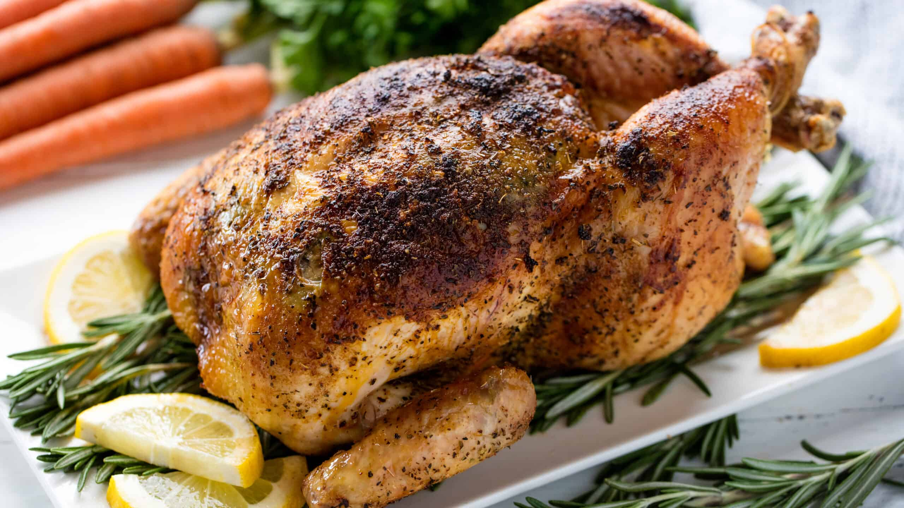

Roast Chicken

Roasted chicken with garnishings
Roasting a whole chicken at home is easier than it seems. You'll find a
detailed ingredient list and step-by-step instructions in the recipe
below, but let's go over the basics:
- Chicken
- Seasonings
- Butter
- Celery
- Season the chicken inside and out
- Add the butter to the chicken and the pan
- Stuff the cavity with celery
- Bake until the chicken is fully roasted